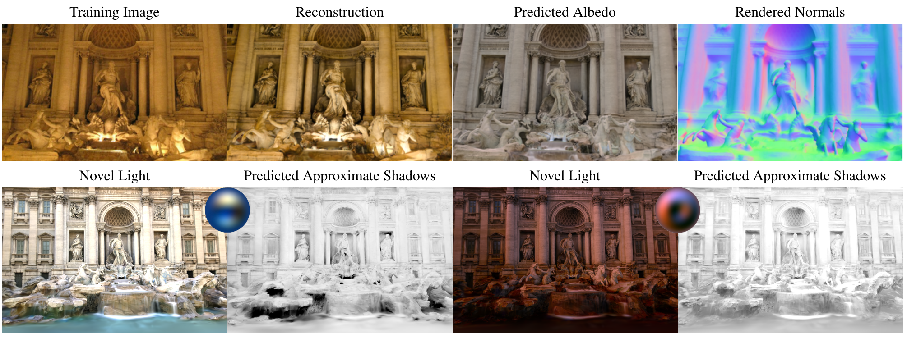
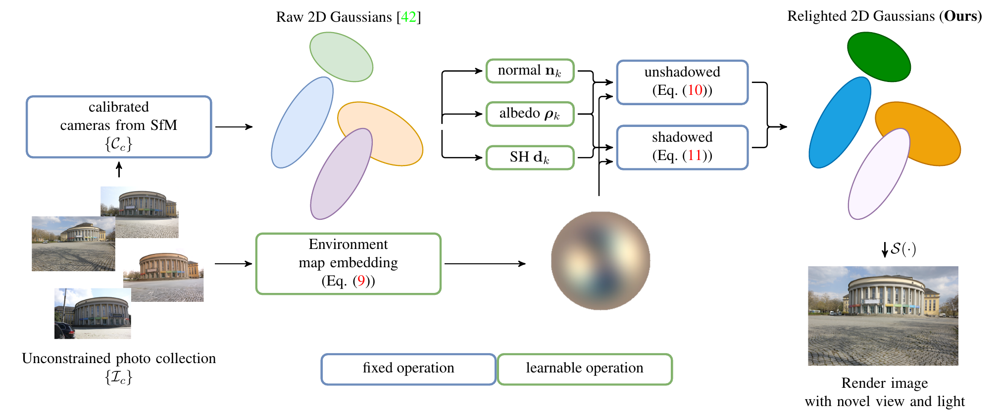

LumiGauss: Relightable Gaussian Splatting in the Wild
WACV 2025

Abstract
Decoupling lighting from geometry using unconstrained photo collections is notoriously challenging. Solving it would benefit many users as creating complex 3D assets takes days of manual labor. Many previous works have attempted to address this issue, often at the expense of output fidelity, which questions the practicality of such methods. We introduce LumiGauss—a technique that tackles 3D reconstruction of scenes and environmental lighting through 2D Gaussian Splatting. Our approach yields high-quality scene reconstructions and enables realistic lighting synthesis under novel environment maps. We also propose a method for enhancing the quality of shadows, common in outdoor scenes, by exploiting spherical harmonics properties. Our approach facilitates seamless integration with game engines and enables the use of fast precomputed radiance transfer. We validate our method on the NeRF-OSR dataset, demonstrating superior performance over baseline methods. Moreover, LumiGauss can synthesize realistic images for unseen environment maps.
Method
LumiGauss learns a relightable scene from unconstrained photo collections with varying viewpoints and lighting conditions. We represent the scene with 2D Gaussians, each with a surface normal, albedo, and a learnable radiance transfer function represented by spherical harmonics. A learned embedding for each training image predicts its environment lighting.

Qualitative Results
Novel View and Relighting
1 / 5
Relighting with a Single Light Source
1 / 3
Bib Entry
@inproceedings{kaleta2025lumigauss,
title = {{LumiGauss: Relightable Gaussian Splatting in the Wild}},
author = {
Kaleta, Joanna
and Kania, Kacper
and Trzci{\'n}ski, Tomasz
and Kowalski, Marek
},
booktitle = {Proceedings of the IEEE/CVF Winter Conference on Applications of Computer Vision (WACV)},
year = {2025}
}